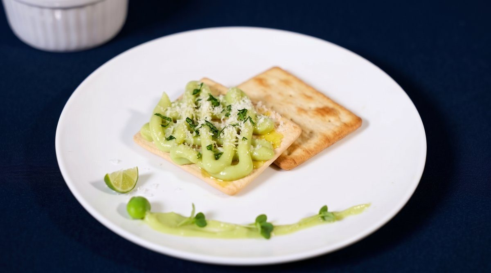

花蓮慈院推毛豆豆漿卡士達醬 助中秋賞月吃甜點零負擔

可樂電子報小編/編輯
中秋佳節將至，親友團聚賞月之餘，許多民眾常為燒烤的重油重鹹與高熱量月餅感到苦惱，擔心過完節體重大幅增加。為了讓大眾能健康無負擔地享受節慶美味，花蓮慈濟醫院在中秋連假前夕，特別分享了一款清爽不油膩的「毛豆豆漿卡士達醬」。這款兼具健康與美味的創新醬料，無論是作為餅乾的沾醬，或是塗抹在蛋糕、吐司上，都非常適合作為中秋賞月時的清新甜點搭配，提供民眾兼具美味與健康的全新選擇。

花蓮慈濟醫院營養師謝淳雅指出，這款「毛豆豆漿卡士達醬」融合了環保蔬食與健康護生的理念。在食材選擇上，特別選用擁有高蛋白質的高濃度豆漿，並搭配富含膳食纖維、低脂肪的毛豆，讓民眾在中秋節期間透過簡單的手作調整，就能有效避免壞膽固醇找上門。相較於傳統以全鮮奶油或高量蛋黃乳化而成的高糖、高飽和脂肪與高熱量精緻卡士達醬，這款創新的植物性醬料，更能大幅降低對身體的負擔。

謝淳雅進一步補充說明，中秋應景食品普遍存在高油、高糖成分，民眾在歡樂氛圍下容易攝取過量。

而毛豆豆漿卡士達醬不僅能提供充足的飽足感，更富含鉀、鎂、大豆異黃酮等天然抗氧化成分，其優質的膳食纖維還能延緩糖分的吸收速度，進而幫助民眾在面對烤肉與月餅等誘惑時，有效剋制口腹之慾。

花蓮慈院鼓勵民眾在連假期間，不妨動手DIY嘗試製作這款健康醬料，將蔬食護生的健康理念融入佳節生活，在團圓時刻也能吃得安心又營養。
▶ 延伸觀看
📺 相關報導影片：點此於 YouTube 觀看完整報導